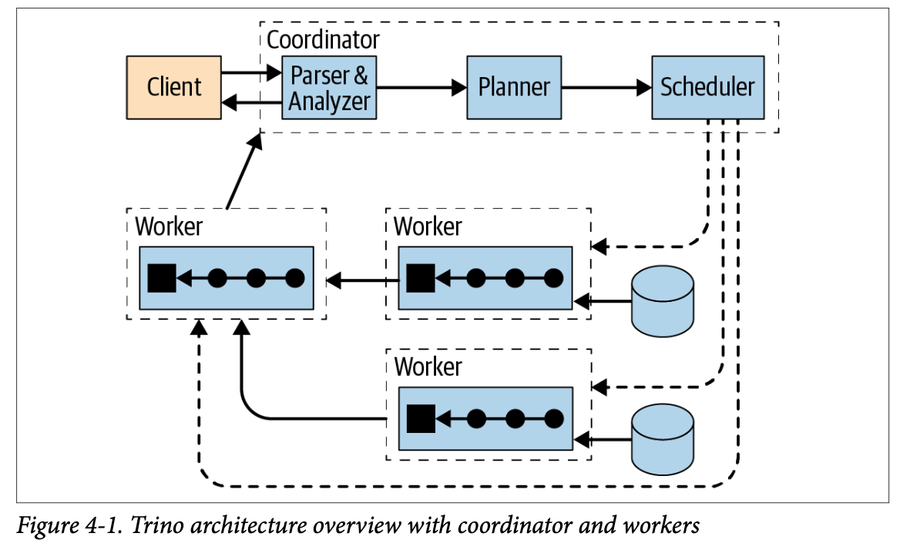
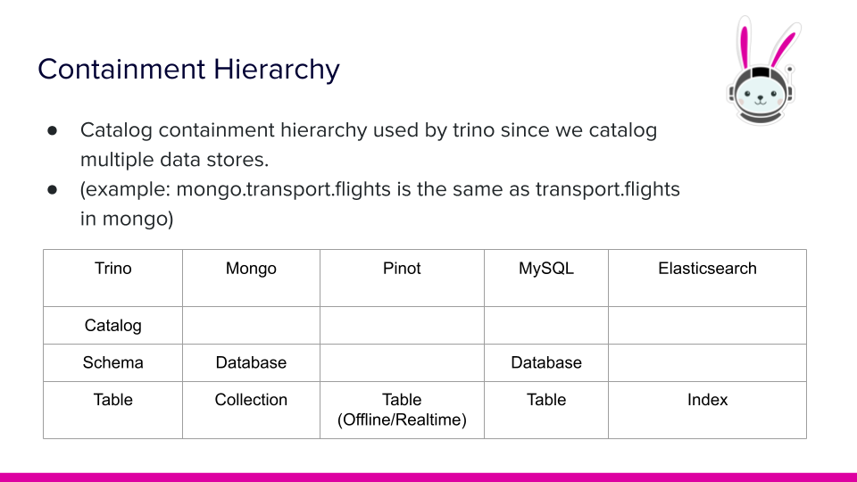
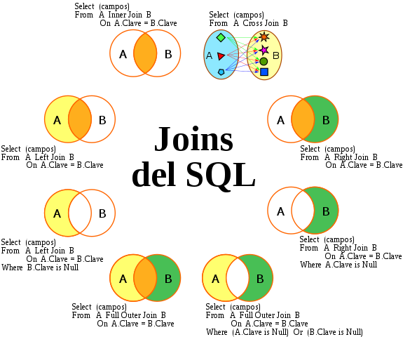
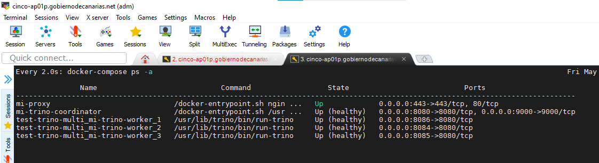
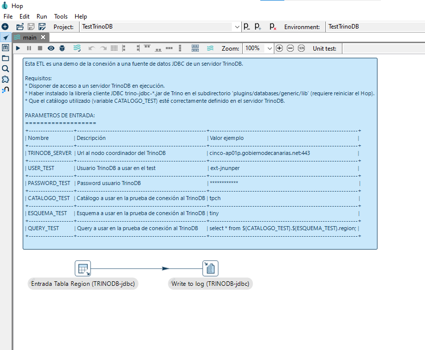
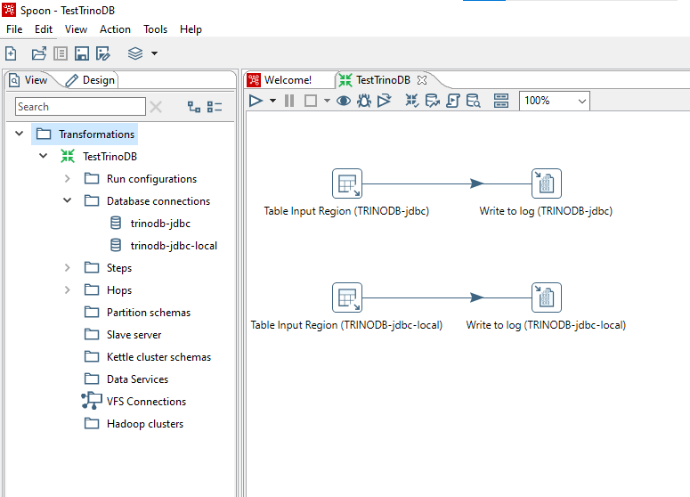
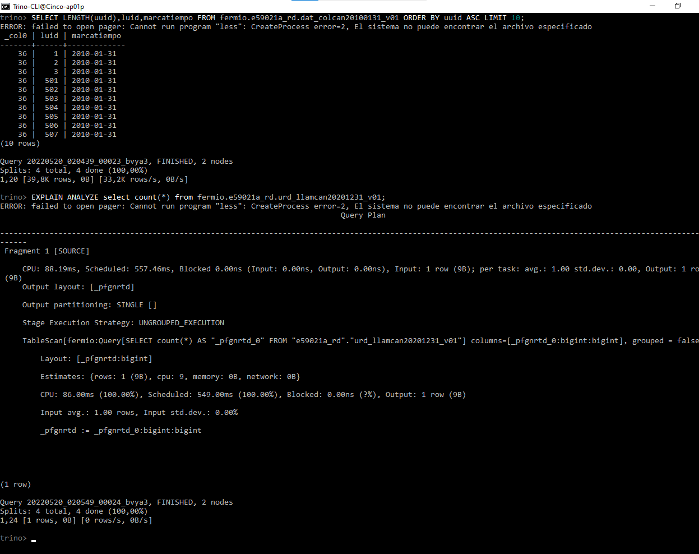
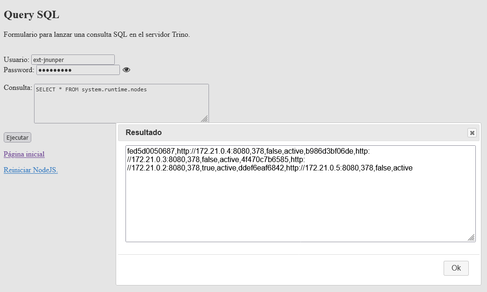

Trino

Un breve vistazo a Trino
Un (no tan) breve vistazo a Trino
Índice
- Introducción y conceptos básicos
- Funcionalidades
- Instalación y configuración
- Pruebas realizadas
- Conclusiones
Introducción y conceptos básicos
¿Qué es Trino?
- Es un motor SQL distribuido ideado para trabajar con grandes volúmenes de datos de una gran variedad de sistemas de datos.
- Desarrollado en Java (soporta Openjava). Tecnología madura y fiable.
- Diseñado para un rendimiento óptimo y escalable.
- No es una base de datos: no almacena datos.
¿Por qué usar Trino?
- Velocidad
- Escalado
- Simplicidad
- Versatilidad
- Análisis in-situ
- Query federation
- Funciona en cualquier lugar
- Confiable
- Abierto

Historia
- Proyecto Presto en Facebook en 2012.
- En 2013 se liberó con licencia Apache.
- La versión más reciente es la v380 (6/5/22).
¿Quién usa Trino?
Conceptos básicos - I
Arquitectura del sistema
-
Trino es un sistema en cluster.
Tipos de nodos:
- Coordinator: El cerebro...
- Worker: El currito...
Conceptos básicos - I
Conceptos básicos - II
En relación a los datos
- Connector: Interfaz a sistemas de datos.
- Catalog: Metadatos de las fuentes de datos.
- Schema: Organización de las tablas de datos.
- Table: Grupo de registros.
Comparativa entre distintos sistemas
Conceptos básicos - III
En relación al modelo de ejecución
- Statement: El comando SQL
- Query: Colección de objetos
- Stage: Pasos
- Task: Tarea
- Driver: Subtareas
- Operator:
- Otros: Exchange, Split
Índice
- Introducción y conceptos básicos
- Funcionalidades
- Instalación y configuración
- Pruebas realizadas
- Conclusiones
Funcionalidades - I
- Web UI
- Es la interfaz de usuario que permite monitorizar el cluster de nodos y manejar las queries.
- Puede hacerse un seguimiento de su ejecución y detalles de las queries.
- No permite lanzar queries
- No muestra los datos resultantes
Funcionalidades - I
- Autenticación de usuarios
- Autorización de usuarios
- Clientes: Trino CLI, Trino Web UI y librerías para intergrar en aplicaciones.
- Comunicaciones seguras
- Extensible
Funcionalidades - I
- Quotas sobre los recursos
- Lenguaje SQL potente
- Connectors preinstalados
- TPCDS
- TPCH
- JMX
- SYSTEM
- MEMORY
- BLACK HOLE
- ...
Ejemplo - Consulta de métrica
Número de ficheros abiertos en cada nodo
trino> SELECT openfiledescriptorcount FROM jmx.current."java.lang:type=operatingsystem";
ERROR: failed to open pager: Cannot run program "less": CreateProcess error=2, El sistema no puede encontrar el archivo especificado
openfiledescriptorcount
-------------------------
2929
2928
2989
2933
(4 rows)
Query 20220519_002644_00001_7jb7m, FINISHED, 4 nodes
Splits: 6 total, 6 done (100,00%)
4,50 [4 rows, 32B] [0 rows/s, 7B/s]
Funcionalidades - I
- SQL-on-Anything: SQL para todo.
- TPCDS
- TPCH
- JMX
- SYSTEM
- MEMORY
- BLACK HOLE
- ...
- Federated Query: Queries sobre varias fuentes de datos.
- Virtual Data Warehouse: Almacenamiento homogéneo.
- Procesamiento/Almacenamiento: Aisla los recursos usados por las queries de los usados por el almacenamiento.
Tipos de Bases de Datos
- RDBMS (Microsoft SQL Server, Oracle Database, MySQL, PostgreSQL, ...)
- NoSQL (Apache Cassandra, MongoDB, CouchDB, ...)
- Cloud databases (Microsoft Azure SQL Database, Amazon Relational Database Service, Oracle Autonomous Database, ...)
- Columnar databases (Google BigQuery, Cassandra, HBase, MariaDB, Azure SQL Data Warehouse, ...)
- Wide column databases (BigTable, Apache Cassandra and Scylla, ...)
- Object-oriented databases (Wakanda, ObjectStore, ...)
- Key-value databases (Amazon DynamoDB, Redis, ...)
- Hierarchical databases (IBM Information Management System (IMS), Windows Registry, ...)
- Document databases (MongoDB, Amazon DocumentDB, Apache CouchDB, ...)
- Graph databases (Datastax Enterprise Graph, Neo4J, ...)
- Time series databases (Druid, eXtremeDB, InfluxDB, ...)
Tipos de Bases de Datos NoSQL

Funcionalidades - II
- Query optimizer: Uso de datos estadísticos.
- Tablas
- Row count
- Columnas
- Data size
- Nulls fraction
- Distinct value count
- Low value
- High value
- Tablas
Ejemplo - Comando SHOW STATS
trino> show stats for ppa.public.tb_encuesta;
ERROR: failed to open pager: Cannot run program "less": CreateProcess error=2, El sistema no puede encontrar el archivo especificado
column_name | data_size | distinct_values_count | nulls_fraction | row_count | low_value | high_value
------------------------+---------------------+-----------------------+---------------------+-----------+-----------+------------
id_establecimiento | 5.0 | 1.0 | 0.0 | NULL | NULL | NULL
id_producto | 3.0 | 0.20454545319080353 | 0.0 | NULL | NULL | NULL
id_grupo_producto | 3.0 | 0.15909090638160706 | 0.0 | NULL | NULL | NULL
latitud | 4.0 | 1.0 | 0.0 | NULL | NULL | NULL
longitud | 5.0 | 1.0 | 0.0 | NULL | NULL | NULL
id_marca | 1.8181819915771484 | 0.11363636702299118 | 0.7727272510528564 | NULL | NULL | NULL
marca_aux | 1.624999761581421 | 0.13636364042758942 | 0.8522727489471436 | NULL | NULL | NULL
variedad | 0.0 | 0.0 | 1.0 | NULL | NULL | NULL
formato_aux | 0.0 | 0.0 | 1.0 | NULL | NULL | NULL
cantidad | NULL | 0.28409090638160706 | 0.13636364042758942 | NULL | NULL | NULL
precio | NULL | 0.6818181872367859 | 0.0 | NULL | NULL | NULL
ano | 5.0 | 1.0 | 0.0 | NULL | NULL | NULL
mes | 3.0 | 1.0 | 0.0 | NULL | NULL | NULL
fecha_hora_recogida | NULL | 1.0 | 0.0 | NULL | NULL | NULL
id_articulo | 0.28409063816070557 | 0.011363625526428223 | 0.9886363744735718 | NULL | NULL | NULL
descripcion_incidencia | 0.0 | 0.0 | 1.0 | NULL | NULL | NULL
created_at | NULL | 0.46590909361839294 | 0.0 | NULL | NULL | NULL
updated_at | NULL | 0.46590909361839294 | 0.0 | NULL | NULL | NULL
id_estado | 5.0 | 1.0 | 0.0 | NULL | NULL | NULL
id_formato | 8.335227448940277 | 0.9261363670229912 | 0.07386363297700882 | NULL | NULL | NULL
id_unidad_medida | 1.863636391727548 | 0.9318181797862053 | 0.06818182021379471 | NULL | NULL | NULL
NULL | NULL | NULL | NULL | 1.0 | NULL | NULL
(22 rows)
Query 20220518_150518_00007_b78u8, FINISHED, 1 node
Splits: 1 total, 1 done (100,00%)
0,39 [0 rows, 0B] [0 rows/s, 0B/s]
Ejemplo - Comando EXPLAIN
trino> EXPLAIN select count(*) from fermio.e59021a_rd.urd_llamcan20201231_v01;
ERROR: failed to open pager: Cannot run program "less": CreateProcess error=2, El sistema no puede encontrar el archivo especificado
Query Plan
--------------------------------------------------------------------------------------------------------------------------------------------------------------
Fragment 0 [SINGLE]
Output layout: [_pfgnrtd]
Output partitioning: SINGLE []
Stage Execution Strategy: UNGROUPED_EXECUTION
Output[_col0]
Ôöé Layout: [_pfgnrtd:bigint]
Ôöé Estimates: {rows: 1 (9B), cpu: 9, memory: 0B, network: 9B}
Ôöé _col0 := _pfgnrtd
ÔööÔöÇ RemoteSource[1]
Layout: [_pfgnrtd:bigint]
Fragment 1 [SOURCE]
Output layout: [_pfgnrtd]
Output partitioning: SINGLE []
Stage Execution Strategy: UNGROUPED_EXECUTION
TableScan[fermio:Query[SELECT count(*) AS "_pfgnrtd_0" FROM "e59021a_rd"."urd_llamcan20201231_v01"] columns=[_pfgnrtd_0:bigint:bigint], grouped = false]
Layout: [_pfgnrtd:bigint]
Estimates: {rows: 1 (9B), cpu: 9, memory: 0B, network: 0B}
_pfgnrtd := _pfgnrtd_0:bigint:bigint
(1 row)
Query 20220518_151129_00008_b78u8, FINISHED, 1 node
Splits: 1 total, 1 done (100,00%)
1,30 [0 rows, 0B] [0 rows/s, 0B/s]
Funcionalidades - III
- Query optimizer: Pushdown.
- Predicate (WHERE)
- Projection (SELECT)
- Dereference
- Aggregation (GROUP BY)
- Join (JOIN)
- Limit (LIMIT)
- Top-N

¿Qué son las windows functions?
Realizan cálculos sobre un conjunto de registros relacionados con el actual, de forma similar a las funciones de agregación pero sin agrupar filas.
SELECT
duration,
SUM(duration) OVER (ORDER BY start_time) AS running_total
FROM
tasks;
Funcionalidades - IV
- Spill to disk
- Dynamic filtering 
Funcionalidades - V
- Resource groups
- Session properties
Funcionalidades - VI
- Distributed sort
- Graceful shutdown
Ejemplo de apagado de nodo worker
curl -X PUT -d '"SHUTTING_DOWN"' -H "Content-type: application/json" http://worker:8081/v1/info/stateFuncionalidades - VII
- Fault-tolerant
- Query retry
- Task retry
- JMX
Índice
- Introducción y conceptos básicos
- Funcionalidades
- Instalación y configuración
- Pruebas realizadas
- Conclusiones
Instalación docker
- Configuración docker-compose fichero docker-composer.yml
version: "3.9"
services:
mi-proxy:
build:
context: mi-proxy
args:
SERVER_HOSTNAME: $SERVER_HOSTNAME
TRINO_URL_PATH: $TRINO_URL_PATH
TRINO_API_URL_PATH: $TRINO_API_URL_PATH
TRINO_API_PORT: $TRINO_API_PORT
image: mi-proxy
container_name: mi-proxy
# user: $TRINO_USER
ports:
- 443:443
volumes:
- ./mi-proxy/logs:/var/log/nginx
# Compartimos el socker de Docker Engine para poder usar el Docker Engine API dentro del contenedor
- /var/run/docker.sock:/var/run/docker.sock
# networks:
# - mi-proxy
# - mi-trino
restart: always
depends_on:
- mi-trino-coordinator
mi-trino-coordinator:
build:
context: mi-trino-coordinator
args:
SERVER_HOSTNAME: $SERVER_HOSTNAME
# Otros parámetros opcionales pueden ir aquí
# Como los usados en https://github.com/trinodb/trino/blob/master/core/docker/README.md
# docker exec -it trino trino --catalog tpch --schema sf1
image: mi-trino-coordinator
container_name: mi-trino-coordinator
env_file:
- .env
- trino-catalogs/.env
# user: $DOCKER_USER
restart: always
ports:
# Mapeamos el puerto 80 externo al 8080 interno que es el puerto por defecto para HTTP usado en la imagen oficial del Trino.
# Mapeamos el puerto 443 externo al 8443 interno que es el puerto para HTTPS por el servidor Trino.
- "8080:8080"
- "9000:9000"
# - "443:8443"
volumes:
- ./trino-catalogs:/etc/trino/catalog:ro
- ./mi-trino-coordinator/logs:/data/trino/var/log
- ./mi-trino-coordinator/nodejs/files:/home/node/app/files
- ./mi-trino-coordinator/nodejs/apps:/home/node/app/apps
- ./mi-trino-coordinator/nodejs/logs:/var/log/trino-api
# - ./mi-trino/files:/home/node/app/files
# - ./mi-trino/apps:/home/node/app/apps
# Compartimos el socker de Docker Engine para poder usar el Docker Engine API dentro del contenedor
# - /var/run/docker.sock:/var/run/docker.sock
# - /tmp/docker-fake.sock:/tmp/docker-fake.sock
mi-trino-worker:
build:
context: mi-trino-worker
args:
SERVER_HOSTNAME: $SERVER_HOSTNAME
# Otros parámetros opcionales pueden ir aquí
# Como los usados en https://github.com/trinodb/trino/blob/master/core/docker/README.md
# docker exec -it trino trino --catalog tpch --schema sf1
image: mi-trino-worker
# container_name: mi-trino-worker0
env_file:
- .env
- trino-catalogs/.env
ports:
- "8081-8091:8080"
volumes:
- ./trino-catalogs:/etc/trino/catalog:ro
- ./mi-trino-worker/logs:/data/trino/var/log
Instalación docker
fichero .env
SERVER_HOSTNAME=cinco-ap01p.gobiernodecanarias.net
TRINO_URL_PATH=aplicaciones/trino
TRINO_SERVER_USER=admin
TRINO_SERVER_PASS=****
TRINO_INTERNAL_COMM_SHARED_SECRET=KCZZItOB+oAMHi5jH59pt4pBE
TRINO_API_URL_PATH=aplicaciones/trino/api
TRINO_API_PORT=9000
Instalación docker
fichero Dockerfile (nodo coordinador)
FROM trinodb/trino
ARG SERVER_HOSTNAME
ENV SERVER_HOSTNAME=${SERVER_HOSTNAME:-localhost}
ARG TRINO_API_PORT
ENV TRINO_API_PORT=${TRINO_API_PORT:-9000}
LABEL org.opencontainers.image.authors="miguel.nunez@evm.net"
LABEL Mi-TRINO='Trino Server v370'
# Instalamos el editor nano (para pruebas)
#RUN apt-get update && \
# apt-get -y install nano
COPY --chown=trino:trino ./config/* /etc/trino/
#COPY --chown=trino:trino ./../trino-catalogs/* /etc/trino/catalog/
RUN rm -rf /etc/trino/catalog/*
##################
##### NODEJS #####
##################
# https://www.ibm.com/docs/en/z-chatops/1.1.0?topic=software-installing-nodejs
# Ficheros descargados offline usando el comando `curl -sL -o node-v18.1.0-linux-x64.tar.gz 'https://nodejs.org/dist/latest/node-v18.1.0-linux-x64.tar.gz'`
# NOTA: La versión docker del Centos no soporta el formato tar.xz.
COPY ./downloads/* /downloads/
USER root
# Instalamos el comando ps usado por el módulo node-ps para listar los procesos.
RUN dnf --disablerepo="*" --nodocs install -y /downloads/procps-ng-3.3.15-6.el8.x86_64.rpm && \
rm -f /downloads/procps-ng-3.3.15-6.el8.x86_64.rpm
# Descomprimimos e instalamos los binarios del Node v18.1.0
RUN tar zxf /downloads/node-v18.1.0-linux-x64.tar.gz -C /opt && \
rm -f /downloads/node-v18.1.0-linux-x64.tar.gz
ENV PATH="/opt/node-v18.1.0-linux-x64/bin:${PATH}"
RUN dnf clean all && rm -rf /var/cache/* /var/log/dnf* /downloads
# Añadimos un nuevo usuario (node)
RUN useradd -ms /bin/bash node
RUN mkdir -p /home/node/app/node_modules && chown -R node:node /home/node/app
# Creamos el directorio para los ficheros de logs
RUN mkdir -p /var/log/trino-api && chown -R node:node /var/log/trino-api
USER node
# Nuevo punto de entrada para este contenedor. Lanzará app.js (Trino-API) y luego el Trino.
COPY --chown=node:node ./docker-entrypoint.sh /docker-entrypoint.sh
RUN chmod a+x /docker-entrypoint.sh
# Copiamos todas las aplicaciones. El directorio /home/node/app/apps se debe exportar como un bind mount.
# NOTA: se requiere poner en el host permiso R/W para todos los usuarios en el directorio /home/ext-jnunperadm/infra/test-trino-multi/mi-trino-coordinator/apps
COPY --chown=node:node ./nodejs/apps /home/node/app/apps/
# Creamos el directorio a exportar para los ficheros a usar por las aplicaciones NodeJs (bind mount)
# NOTA: se requiere poner en el host permiso R/W para todos los usuarios en el directorio /home/ext-jnunper/infra/mi-nodejs/files
RUN mkdir /home/node/app/files
# Y cargamos sus dependencias
RUN find /home/node/app/apps -name package.json -maxdepth 2 -print0 | xargs -0 -r -n 1 -i sh -c 'cd -- $(dirname {}) ; echo "Instalando dependencias en $(pwd)..." ; npm install'
# Cargamos el módulo nodemon para relanzar el node con los cambios de los scripts.
RUN npm install -g nodemon
USER trino
##################
##### NODEJS #####
##################
RUN mkdir -p /data/trino/var/log && chown -R trino:trino /data/trino
USER root
EXPOSE $TRINO_API_PORT
CMD ["/docker-entrypoint.sh", "/usr/lib/trino/bin/run-trino"]
Instalación docker
Contenedores docker en ejecución (cluster Trino) Configuración Trino
- Configuración nodo coordinador fichero config.properties
#single node install config
coordinator=true
node-scheduler.include-coordinator=true
http-server.http.port=8080
discovery.uri=http://mi-trino-coordinator:8080
# https://trino.io/docs/current/security/tls.html#https-load-balancer
#http-server.https.enabled=true
http-server.process-forwarded=true
# Esto es para permitir usar la autenticación usuario/password con Trino CLI sin tener que activar HTTPS.
# Por ejemplo: trino --user=miguel --password
# NO FUNCIONA ==> el paso de contraseña sigue exigiendo HTTPS.
# La solución es evitar el flag --password.
#http-server.authentication.allow-insecure-over-http=true
# Secreto compartido usado en las comunicaciones entre nodos. Debe ser el mismo en todos los ficheros config.properties de todos los nodos.
# https://trino.io/docs/current/security/internal-communication.html
# NOTA: El secreto de 512 bytes se ha generado usando el comando `openssl rand 512 | base64`.
internal-communication.shared-secret=KCZZItOB+oAMHi5jH59pt4pBE0l4zQc
# Configuramos la autenticación de usuarios (sólo se admiten usuarios ext-*@canarias.org ó *@gobiernodecanarias.org).
# https://trino.io/docs/current/security/user-mapping.html
# En este ejemplo, bloquea el acceso al cluster del usuario etormed y se permite al resto, además se mapean los usuarios ext-* a ext-*@canarias.es.
http-server.authentication.type=PASSWORD
http-server.authentication.password.user-mapping.file=etc/user-mapping.json
# Ocultar columnas no autorizadas en lugar de emitir un error
#hide-inaccessible-columns = true
# Web-UI
# https://trino.io/docs/current/admin/web-interface.html
#
# Propiedades del Web-UI
# https://trino.io/docs/current/admin/properties-web-interface.html
#web-ui.enabled=false
Configuración Trino
fichero access-control.properties
# Reglas de control de acceso para todo el cluster.
# https://trino.io/docs/current/security/file-system-access-control.html#system-level-access-control-files
# NOTA: No parece existir un Group provider por defecto (hay que crear uno como un plugin) según se indica en https://trino.io/docs/current/develop/group-provider.html
# Teniedo un Group provider, se pueden aplicar reglas de autorización a grupos de usuarios.
access-control.name=file
#security.config-file=/etc/trino/cluster-auth-rules.json
# TEST_1: Reglas
# Todo el mundo tiene acceso total a todos los catálogos, excepto el catálogo ACTINIO que sólo es accesible en modo lectura para los usuarios ext-jnunper@canarias.es y etormed.
# Todo el mundo puede ejecutar queries, el usuario etormed puede matar sus queries y el usuario ext-jnunper@canarias puede ver, ejecutar y matar de todos los usuarios.
security.config-file=/etc/trino/cluster-auth-rules.test1.json
# Releemos cada segundo el fichero de reglas para aplicar cambios
security.refresh-period=1s
Configuración Trino
fichero cluster-auth-rules.json
{
"catalogs": [{
"role": "admin",
"catalog": "(mysql|system)",
"allow": "all"
}, {
"group": "finance|human_resources",
"catalog": "postgres",
"allow": true
}, {
"catalog": "hive",
"allow": "all"
}, {
"user": "alice",
"catalog": "postgresql",
"allow": "read-only"
}, {
"catalog": "system",
"allow": "none"
}
],
"schemas": [{
"role": "admin",
"schema": ".*",
"owner": true
}, {
"user": "guest",
"owner": false
}, {
"catalog": "default",
"schema": "default",
"owner": true
}
],
"tables": [{
"role": "admin",
"privileges": ["SELECT", "INSERT", "DELETE", "OWNERSHIP"]
}, {
"user": "banned_user",
"privileges": []
}, {
"catalog": "default",
"schema": "hr",
"table": "employee",
"privileges": ["SELECT"],
"filter": "user = current_user",
"filter_environment": {
"user": "system_user"
}
}, {
"catalog": "default",
"schema": "default",
"table": ".*",
"privileges": ["SELECT"],
"columns": [{
"name": "address",
"allow": false
}, {
"name": "SSN",
"mask": "'XXX-XX-' + substring(credit_card, -4)",
"mask_environment": {
"user": "system_user"
}
}
]
}
],
"system_session_properties": [{
"role": "admin",
"allow": true
}, {
"user": "banned_user",
"allow": false
}, {
"property": "resource_overcommit",
"allow": true
}
],
"catalog_session_properties": [{
"role": "admin",
"allow": true
}, {
"user": "banned_user",
"allow": false
}, {
"catalog": "hive",
"property": "bucket_execution_enabled",
"allow": true
}
],
"queries": [{
"role": "admin",
"allow": ["execute", "kill", "view"]
}, {
"user": "alice",
"allow": ["execute", "kill"]
}, {
"group": "contractors",
"queryOwner": "alice|dave",
"allow": ["view"]
}, {
"allow": ["execute"]
}
],
"impersonation": [{
"original_role": "admin",
"new_user": "bob",
"allow": false
}, {
"original_role": "admin",
"new_user": ".*"
}, {
"original_user": ".*",
"new_user": "test"
}
],
"system_information": [{
"role": "admin",
"allow": ["read", "write"]
}, {
"user": "alice",
"allow": ["read"]
}
]
}
Configuración Trino
fichero group-provider.properties
# File group provider
# https://trino.io/docs/current/security/group-file.html
group-provider.name=file
file.group-file=/etc/trino/grupos-usuarios.txt
file.refresh-period=10s
Configuración Trino
fichero grupos-usuarios.txt
admin:ext-jnunper@canarias.es
lectores:ext-jnunper@canarias.es,etormed,ext-jgilcar@canarias.es,ext-mhergark@canarias.es
escritores: etormed
Configuración Trino
fichero password-authenticator.properties
# # Datos del mecanimos de autenticación de usuarios mediante claves.
# # https://trino.io/docs/current/security/password-file.html
# password-authenticator.name=file
# file.password-file=/etc/trino/usuarios.db
# #file.refresh-period=5s
# #file.auth-token-cache.max-size=1000
# Mecanismo de autenticación por LDAP
# Usuario de búsqueda (no usado): uid=trino-ldap,o=applications,o=gobiernodecanarias,c=es
password-authenticator.name=ldap
ldap.url=ldap://directorio-pre.gobiernodecanarias.net:389
ldap.allow-insecure=true
ldap.user-bind-pattern=uid=${USER},o=gobiernodecanarias,c=es:uid=${USER},o=canarias.org,c=es
#ldap.bind-dn=uid=trino-ldap,o=applications,o=gobiernodecanarias,c=es
#ldap.bind-password=****
Configuración Trino
fichero user-mapping.json
{
"rules": [
{
"pattern": "(ext-.+)",
"case": "lower",
"user": "$1@canarias.es",
"allow": true
},
{
"pattern": "(.+)",
"allow": true
}
]
} Configuración Trino
fichero log.properties
# Nivel de logging de los distintos componentes de TrinoDB
# https://trino.io/docs/current/installation/deployment.html#log-levels
io.trino=INFO
io.trino.plugin.password=DEBUG Configuración Trino
fichero usuarios.db
miguel:$2y$10$RkOdWEkLHjaAds7Kzp0C3eWNHVzoawLolnmnvdbsxQUB0ACjQzeAO
user_ro:$2y$10$.VJ6yKEuWo38NXK.bd6/J.ML5.sfEFA1B.0jNoyMw/VsQzoLAjNc6
user_rw:$2y$10$5us6RyTDd/ynlOt.IX0R1eHu9laNqGtOfBfUGm.ZYMgUty6QdBKIO
Configuración Trino
- Catálogos fichero .env
DB_FERMIO_USER=extjnunper
DB_FERMIO_PASSWORD=****
DB_OISTAC_USER=extjnunper
DB_OISTAC_PASSWORD=****
DB_PPA_USER=root
DB_PPA_PASSWORD=****
DB_ACTINIO_USER=extjnunper
DB_ACTINIO_PASSWORD=****
Configuración Trino
fichero actinio.properties
connector.name=postgresql
### Conexión al servidor ACTINIO (actinio.istac.local)
connection-url=jdbc:postgresql://xxx.xxx.xxx.xxx:xxxx/pistac
connection-user=${ENV:DB_ACTINIO_USER}
connection-password=${ENV:DB_ACTINIO_PASSWORD}
connector.name=blackhole
Configuración Trino
fichero fermio.properties
connector.name=postgresql
### Conexión al FERMIO
connection-url=jdbc:postgresql://xxx.xxx.xxx.xxx:xxxx/pistac
connection-user=${ENV:DB_FERMIO_USER}
connection-password=${ENV:DB_FERMIO_PASSWORD}
#fermio.security=FILE
#fermio.config-file=/etc/trino/catalog/fermio-auth-rules.json
{
"schemas": [{
"user": "admin",
"schema": ".*",
"owner": true
}, {
"group": "finance|human_resources",
"schema": "employees",
"owner": true
}, {
"user": "guest",
"owner": false
}, {
"schema": "default",
"owner": true
}
],
"tables": [{
"user": "admin",
"privileges": ["SELECT", "INSERT", "DELETE", "OWNERSHIP"]
}, {
"user": "banned_user",
"privileges": []
}, {
"schema": "hr",
"table": "employee",
"privileges": ["SELECT"],
"filter": "user = current_user"
}{
"schema": "default",
"table": ".*",
"privileges": ["SELECT"],
"columns": [{
"name": "address",
"allow": false
}, {
"name": "ssn",
"mask": "'XXX-XX-' + substring(credit_card, -4)",
"mask_environment": {
"user": "admin"
}
}
]
}
],
"session_properties": [{
"property": "force_local_scheduling",
"allow": true
}, {
"user": "admin",
"property": "max_split_size",
"allow": true
}
]
}
Configuración Trino
fichero jmx.properties
connector.name=jmx
connector.name=memory
connector.name=oracle
### Conexión al OISTAC
connection-url=jdbc:oracle:thin:@//xxx.xxx.xxx.xxx:xxxx/OISTAC
connection-user=${ENV:DB_OISTAC_USER}
connection-password=${ENV:DB_OISTAC_PASSWORD}
connector.name=tpcds
tpcds.splits-per-node=4
Configuración Trino
- Configuración nodo worker fichero config.properties
coordinator=false
http-server.http.port=8080
query.max-memory=50GB
query.max-memory-per-node=0.3GB
discovery.uri=http://mi-trino-coordinator:8080
internal-communication.shared-secret=KCZZItOB+oAMHi5jH59pt4pBE0l4zQc
Índice
- Introducción y conceptos básicos
- Funcionalidades
- Instalación y configuración
- Pruebas realizadas
- Conclusiones
Pruebas
- Mapeado de usuarios en el fichero config.properties
http-server.authentication.type=PASSWORD
http-server.authentication.password.user-mapping.file=etc/user-mapping.json
{
"rules": [
{
"pattern": "etormed",
"allow": false
},
{
"pattern": "(ext-.+)",
"case": "lower",
"user": "$1@canarias.es",
"allow": true
},
{
"pattern": "(.+)",
"allow": true
}
]
}
Pruebas
- Control de acceso a catálogos y queries en el fichero access-control.properties
security.config-file=/etc/trino/cluster-auth-rules.test1.json
security.refresh-period=1s
{
"catalogs": [
{
"user": "(ext-jnunper@canarias.es|etormed)",
"catalog": "actinio",
"allow": "read-only"
},
{
"catalog": "actinio",
"allow": "none"
},
{
"allow": "all"
}
],
"queries": [
{
"user": "ext-jnunper@canarias.es",
"allow": ["execute", "kill", "view"]
},
{
"user": "etormed",
"allow": ["execute", "kill"]
},
{
"allow": ["execute"]
}
]
}
Pruebas
- Bloqueo de la interfaz web en el fichero config.properties
web-ui.enabled=false
Pruebas
- Control de acceso a catálogos y filtrado de datos en el fichero config.properties
hide-inaccessible-columns=false
security.config-file=/etc/trino/cluster-auth-rules.test1.json
{
"tables": [
{
"user": "ext-jnunper@canarias.es",
"catalog": "fermio",
"schema": "e59021a_rd",
"table": "dat_colcan20100131_v01",
"privileges": ["SELECT"],
"filter": "luid=501 or luid=502 or luid=503",
"columns": [
{
"name": "stid",
"allow": false
},
{
"name": "uuid",
"mask": "cast(concat(substring(uuid, 1, 23), '-*') as varchar(36))"
}
]
},
{
"privileges": ["SELECT", "INSERT", "DELETE", "UPDATE", "OWNERSHIP", "GRANT_SELECT"]
}
]
}
Pruebas
Acceso desde Apache Hop a Trino
Pruebas
Acceso desde Kettle 8.3 a Trino
Pruebas
Trino-CLI
Pruebas
Sencillo formulario web para realizar consultas contra Trino
Índice
- Introducción y conceptos básicos
- Funcionalidades
- Instalación y configuración
- Pruebas realizadas
- Conclusiones
Ventajas
- Es gratis
- Gestión uniforme de todas las fuentes de datos
- Un control fino de los accesos
- Categorizar las queries en diferentes prioridades
- Facilita el análisis de datos (calidad y rendimiento)
- Fácil de automatizar (REST API)
- Queries optimizadas
- ...y muchas promesas!!

Desventajas - I
- Carencias:
- No permite reutilizar queries
- No incluye una herramienta para la gestión de usuarios
- No hay herramienta para gestionar la configuración
- No soporta comentarios en los ficheros JSON
- No hay imagen docker oficial específica para coordinador y workers
Desventajas - II
- No es idóneo para:
- Queries fijas: No usa cachés
- Instalaciones en un único servidor
- Se pierde la posibilidad de auditar accesos a las BDD
- No aconsejado para docker short-lived
- Configuración de la memoria complicada
Desventajas - III
- Limitaciones/Problemas:
- No soporta Oracle versiones <12
- No soporta algunas de las funcionalidades de las fuentes de datos
- No soporta CAS/SSO
- Algunos tipos de datos no se soportan o requieren de configuración adicional
- El histórico de queries es volátil
- El driver JDBC no funciona bien con el Apache Hop/Pentaho
- Se debe reiniciar el cluster para quitar/poner catálogos
Conclusiones
Referencias
- https://en.wikipedia.org/wiki/Presto_(SQL_query_engine)
- https://blog.starburst.io/intro-to-trino-for-the-trinewbie
- https://docs.starburst.io/data-consumer/clients/odbc.html
- https://www.sas.com/content/dam/SAS/support/en/sas-global-forum-proceedings/2019/3358-2019.pdf
- https://www.matillion.com/resources/blog/the-types-of-databases-with-examples
- https://www.javatpoint.com/types-of-databases
- https://trino.io/docs/current/develop/client-protocol.html